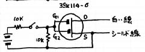
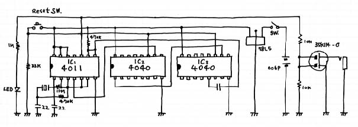
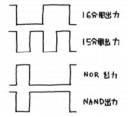
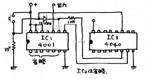

2002年6月11日にテニアン島で観測出来た金環日蝕は、金環日蝕時(第2接触から第3接触迄の時間)は42秒程度でした。
この４２秒間を2秒間隔で自動撮影しようと考えました。その回路の開発について報告します。
使用する写真機は、キャノンEOS 630 です。
EOS 630はAF機能と自動巻き上げ機能を持っています。 望遠鏡撮影の場合、AF機能は必要無く、カメラはマニュアルで操作します。
問題は自動巻き上げ装置を利用して自動的にシャッターをきることです。
|
|
|
|
|
|
EOS 630 にはレリーズシューはありません。リモートコントロールは専用のリモートスイッチ RS-60T3 を取り付ける必要があります。(このリモートスイッチを取り付けるためにカメラボデイにコネクタがついていることが必要です) このスイッチボックスのボタンを押せばカメラにさわらずにシャッタ−をきることが出来、かつフィルムの巻き上げが出来ます。
このリモートスイッチを押した時の変化をリモートコントローラを連結しているコードに伝えれば自動的に写真を撮ることができるはずです。
そこでリモートコントローラを分解して見ました。
ボデイにつながるコードは2芯のシールドワイヤ(つまりコードとして3本)でした。ボタンを押すとシールドコードとあとの二本、つまり全部の線がショート状態になります
|
|
|
|
しかし、良く観察すると中の白い線をシールド線に接触することによってシャッターがきれることが判りました。 このことからこの二本の線を2秒毎に1回ショートする回路を作れば良いことになります。
ところでこの2本の線のショートですが、トランジスタスイッチでコントロールできるものでしょうか?テスターで極性を計ってみると白い線に5Vの電圧が来ていることが判りました。
実験は2SC1815を使いました。白い線にコレクタをつなぎ、エミッタをシールド線につなぎました。そしてコレクタとベースを指で摘んでみると写真機のシャッターが見事に働きました。 まずは成功です。
|
|
|
|
|
|
ここで問題になることは白い線に来ている5Vで2秒に1回のON信号を作ることは大変です。どうしても別な電源が必要になります。そこで外部電源を使い右上図のような回路を作って見ました。
どうしたことでしょう。これが働かないのです。ベース電流が足りないのでしょうか。ベースのバイアス抵抗の価を変えてみたのですが全然動いてくれません。
原因はいくら考えても判りません。しかし、明日は出発しなければなりませんから何とかしなければなりません。この葛藤のために大分時間を浪費してしまいました。
いろいろ考えた末、「FETならどうだ」ということになりました。3SK114-Oなら無信号時にドレイン-ソース間はOFFになっているはずです。早速図のように2SC1815を3SK１１４-Oに変更した回路を作りました。この回路でゲート電圧がゼロVの時はシャッターが働かず、適当な電圧をかけることによってシャッターが働くことを確認しました。
|  |
|
|
これでスイッチャーの回路は完成しました。 次はいよいよ2秒のタイマーの回路です。
正確な2秒を得るために水晶時計用の32.768kHzの水晶を使いそれを16分周して2秒を得ることにしました。発振は4069を使い発振成分をバッファに通します。分周器は74HC4040
2個使います。回路を図に示します。
|  |
|
|
|
|
|
|
実はこの回路はパーフェクトではありません。2秒毎に一つのパルスを発生してはくれますがいろいろと問題を抱えているのです。 しかしタイムアップでこのままテニアン島へ持って行くことになりました。 その結果カメラに対する撮影指令はしっかり出すことが出来ました。しかし、シャッター膜に油が滲み出すと云うアクシデントに見舞われ写真撮影は残念ながら失敗しました。(テニアン記参照)
テニアンから帰って来てから将来のためにこの回路を完全なものにしておこうと考えました。
それではこの回路のどこがパーフェクトではないのでしょうか?
(1)電源スイッチを入れるとまず一つパルスが出ます。そしてその1秒後にパルスが出て、以後2秒毎に正常なパルスが出力されます。(スタートがおかしい)
(2)最初、リセットスイッチを押しながら電源スイッチを入れると1秒のインターバルは発生しませんが電源を入れた瞬間に1つだけパルスが出力されます。
(3)リセットスイッチを離すとすぐに撮影されず2秒後から正常に働きます。
(4)これはあとから分かったことですが、カメラのセットがS(シングル)でなく、C(連続)になっていると出力パルスの幅が長いと(4040の単純な出力の場合、1秒になる)連続撮影されてしまうことがあるので、この現象を回避するためにパルス幅を狭くするためのCRによる時間遅れが発生していました。(一旦走り出せば2秒は正確ですが、)
理想的には、リセットスイッチを押しながら電源スイッチを入れた時、パルスが出力されず、リセットスイッチを離した瞬間にパルスが出力し、以後2秒毎に出力されるというものです。
上記(4)の現象を回避するため15分周(1秒)と混合して、0.5秒ON、1.5秒OFFという出力を得るためにIC-1
を14011B からNORである 14001Bに変更し、一段NORを通して正常化をはかりました。
しかし、今度はリセットスイッチを押すと連続した出力が現れるというアクシデントに見回れました。
そのあと、ICをNANDにしたりNORにしたりいろいろと実験しました。しかしこれらのすべてをここに書きますと冗長な物になりますから省略します。 最後に図に示すような回路でようやく完全なものになりました。(出力の信号を3SK114-Oへつなぐ)
|  |  |
|
|
|
今年の12月にオーストラリアで皆既日蝕があります。その継続時間はわずか30秒です。この皆既日蝕の場合の露出は継続時間が短いので、1秒を中心に1/2、1、2秒
または、1/3、1、3秒にセットして撮影しようと考えています。 その場合前者では4.5秒程度、後者で6秒程度のタイマーが必要になります。
まだ行くかどうかも決めてありませんが、その場合はこの回路をまた改造することになると思います。
電子回路の技術は必要に応じて考えることで向上しますのでみなさんもぜひいろいろな目的を作りチャレンジしてみてください。